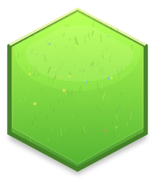
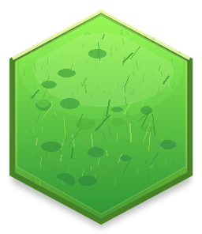
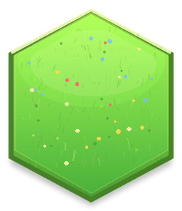
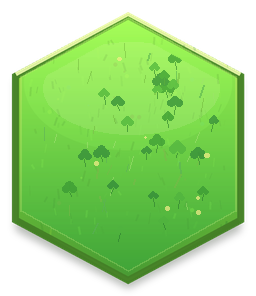
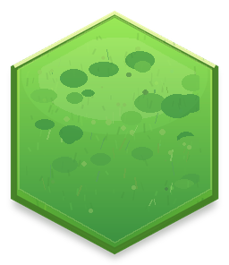
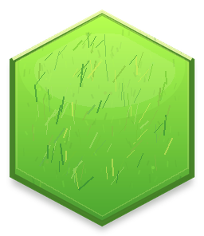
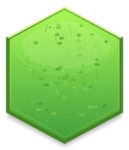
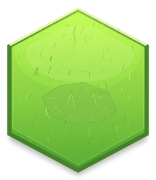

01Base
밝은 기본 풀
가장 안전한 기본형. 캐릭터 색을 방해하지 않는 밝은 녹색 톤입니다.
궁수 토큰의 밝은 캐주얼 톤에 맞춘 풀 바닥 후보 8종입니다. 모두 같은 헥사 규격이라 이후 실제 보드에 자연스럽게 섞어 쓸 수 있습니다.








가장 안전한 기본형. 캐릭터 색을 방해하지 않는 밝은 녹색 톤입니다.
음영을 조금 더 넣은 변주. 필드에 깊이를 줄 때 쓰기 좋습니다.
필드가 단조로울 때 포인트용으로 섞을 수 있는 컬러 액센트입니다.
작은 잎 모양으로 귀여운 느낌을 강화한 후보입니다.
조금 습한 지형 느낌. 초록 계열 안에서 분위기만 바꿉니다.
움직임 있는 브러시감. 보드가 너무 평면적으로 보일 때 유리합니다.
디테일은 많지만 색 대비는 낮게 둔 자연 장식용 후보입니다.
갈색 길 대신 녹색 안에서만 눌린 느낌을 준 변주입니다.